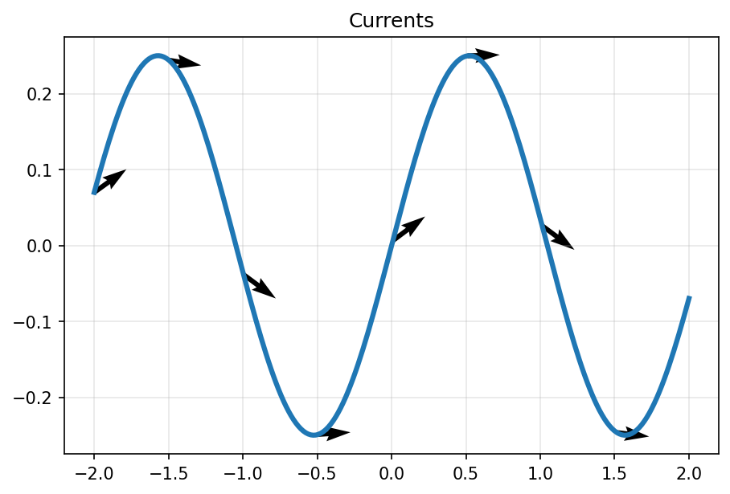

A current records an oriented geometric object by how it integrates every smooth compactly supported test form. The lecture builds the object, its mass, its boundary, and the checks that make weak geometric limits usable.
The notebook names the central object, perturbs a simple model, and stores a finite diagnostic. The lecture expands that miniature contract into the standard current toolkit.
A \(k\)-current is a continuous linear functional on smooth compactly supported \(k\)-forms. Its values are measured by pairing, not by point membership.
Rectifiable pieces provide tangent planes, orientations, and integer densities. They turn integration over rough sets into a stable object.
Mass, boundary, pushforward, weak convergence, and flat distance provide the estimates needed for existence arguments.
The notation is deliberately dual: \(T\) acts on \(k\)-forms, while the geometry of \(T\) may be a curve, surface, chain, or rough rectifiable set.
Let \(U\subset \mathbb{R}^n\). A \(k\)-current \(T\) on \(U\) is a continuous linear map from compactly supported smooth \(k\)-forms to real numbers:
Continuity is taken with respect to the usual test-form topology: supports stay in a compact set and all derivatives converge uniformly.
The notebook's primary figure is an oriented curve. The current is the rule obtained by integrating a test \(1\)-form along that oriented path.

Chapter-local artifact: a sampled oriented curve with finite diagnostic \(4.492096240425237\) recorded in the notebook checks.
Mass is the current analogue of total variation. It measures the largest response to bounded test forms and localizes to a mass measure when finite.
For a smooth \(k\)-form \(\omega\), the comass norm controls the largest value on unit simple \(k\)-vectors.
A finite-mass current obeys \(|T(\omega)|\le M(T)\|\omega\|_\ast\) for compactly supported probes.
Finite mass gives a Radon measure \(\|T\|\) with local estimates on open sets \(V\subset U\).
The boundary of a current is another current. It is built to make Stokes' theorem true by definition, even when the geometric object is rough.
For a \(k\)-current \(T\), its boundary is the \((k-1)\)-current
Here \(\eta\) is a compactly supported smooth \((k-1)\)-form. Since \(d^2=0\), boundaries have no boundary: \(\partial(\partial T)=0\).
Rectifiability is the bridge from arbitrary functionals back to geometric objects with approximate tangent planes almost everywhere.
A countably \(k\)-rectifiable set \(M\) is covered, up to \(\mathcal{H}^k\)-null error, by countably many Lipschitz images.
An approximate unit simple \(k\)-vector \(\xi(x)\) fixes the sign of the pairing at almost every point of \(M\).
An integer density \(\theta(x)\) counts sheets with sign and weight. Integral currents require integer rectifiability and finite boundary mass.
Canonical local model: \(T(\omega)=\int_M \theta(x)\langle\omega(x),\xi(x)\rangle\,d\mathcal{H}^k(x)\). This is the original geometric picture that the functional definition protects under limiting operations.
Currents move naturally under Lipschitz maps. The map acts on the current by composing test forms with the pullback.
For a proper Lipschitz map \(f:U\to V\), the pushforward current is defined by
Currents are designed for compactness: a sequence may not converge as sets, but its responses to every test form can converge.
A sequence \(T_j\) converges weakly to \(T\) when
Oscillations may vanish if all compactly supported smooth tests average them out.
Uniform local bounds on \(M(T_j)\) and \(M(\partial T_j)\), together with tight support control, produce subsequential weak convergence.
The limit remains in the intended class when rectifiability and integrality are protected by the compactness theorem.
The flat norm measures whether a difference can be decomposed into a small residual current plus the boundary of a small higher-dimensional filling.
For two \(k\)-currents \(T\) and \(S\), search for currents \(R\) and \(Q\) satisfying
The filling \(Q\) explains geometric displacement; the residual \(R\) explains leftover unmatched mass.
The chapter artifact computes a finite curve diagnostic. The slide turns that artifact into a reusable inspection protocol for current examples.
Add one extra sampled curve or polygonal chain. For the new current, name the test form, estimate mass, and compute a boundary residual.
A good failure case reverses orientation on one segment or leaves an endpoint unmatched.
The same visible subset can define different currents. Orientation, density, boundary, and test-form topology all matter.
Reversing orientation changes \(T(\omega)\) to \(-T(\omega)\) for many probes, while the support remains unchanged.
Two sheets with opposite orientation can cancel as currents. A drawing that counts both sheets without signs misses the analysis.
Mass is lower semicontinuous under good hypotheses, but oscillation and cancellation can make naive equalities false.
If a proposed argument mentions only the support of \(T\), ask which test forms are being paired, what orientation is used, what multiplicity is present, and whether boundary mass is controlled.
Currents let geometric measure theory speak simultaneously about rough geometry, algebraic boundary, and analytic compactness.
The durable habit: translate each theorem into an inspectable contract. Name the current, name the probe, estimate mass, check boundary, and identify the hypothesis that prevents the visual model from lying.